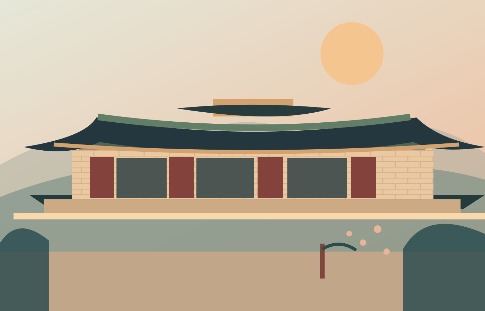

57 BCE–668 CE
The Three Kingdoms
Goguryeo, Baekje, and Silla developed distinct cultures and competed for influence. Their histories remain an important part of Korea's early identity.
THE HISTORY / CHAPTER 01
To understand Korea today, it helps to know the kingdoms, ideas, and turning points that came before it.
Follow the timeline ↓
KOREA THROUGH TIMEBEFORE THE SKYLINES
The Korean Peninsula has a rich history that spans many centuries. Kingdoms rose, ideas traveled, and people developed traditions in architecture, writing, art, and daily life.
Much of that legacy can still be seen at royal palaces, temples, museums, and historic neighborhoods.
A SHORT TIMELINE
57 BCE–668 CE
Goguryeo, Baekje, and Silla developed distinct cultures and competed for influence. Their histories remain an important part of Korea's early identity.
918–1392
The Goryeo period is remembered for achievements in Buddhist art and celadon ceramics. The modern English name “Korea” comes from Goryeo.
1392–1897
Confucian ideas shaped government and society. King Sejong's reign brought the creation of Hangul, the Korean alphabet, in the 15th century.
20th century
After Japanese colonial rule ended in 1945, the peninsula was divided. The Korean War (1950–1953) caused tremendous loss. South Korea later underwent rapid economic and social change.
Today
Modern South Korea is known for technology and global popular culture while continuing to preserve historic sites and traditions.
SEE IT FOR YOURSELF
Visiting historic places turns dates and names into experiences you can remember.
Walk through the gates and courtyards of a royal palace first built during the Joseon Dynasty in 1395.
Visitor information ↗Explore the former capital of Silla, home to historic temples, royal tombs, and centuries of cultural heritage.
Explore Gyeongju →